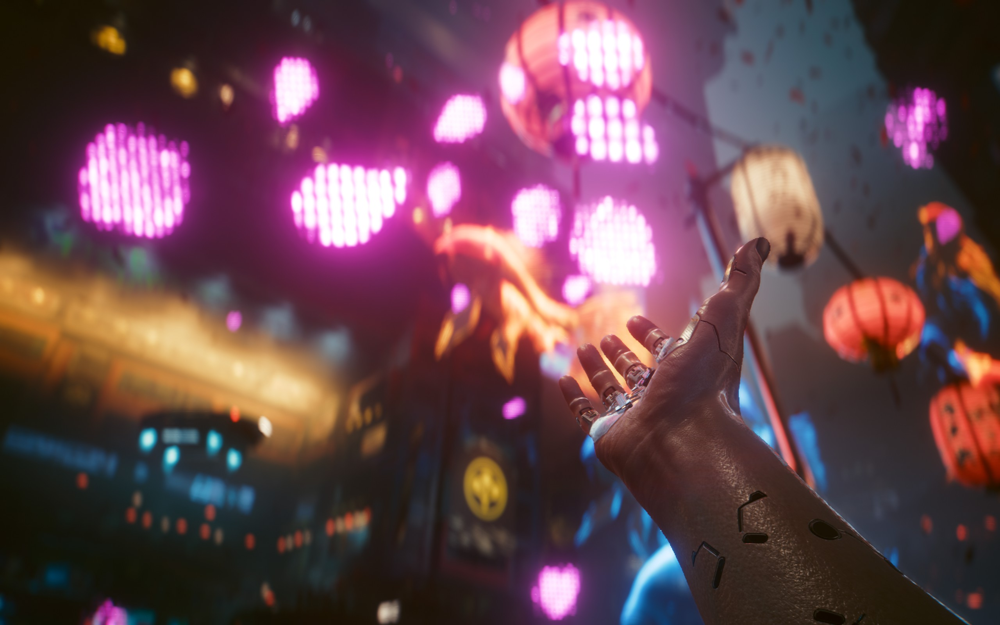

欢迎来到黑暗未来
夜之城是一座把梦想、科技和暴力压进同一块混凝土里的城市。这里的每一条街都有价格，每一段关系都可能改变你的结局。
Syberpunk 从游戏、动画和截图中整理这座城市的入口，让你先读懂它，再决定要以什么方式活下去。
06内容频道
∞可以重走的选择
选择你的入口
像官方站点一样，从游戏、世界、动画和社区四个方向进入。每个入口都通往一套不同的阅读节奏。
来自夜之城的信号

Wake up,
Samurai.
Transmission / Johnny Silverhand
传奇不会在安静里发生。去街上，去寻找一条不会被任何人替你写好的路。
浏览城市档案